Paintings for sale
Every painting Joan has for sale, gallery by gallery. Select one to see its size, price and how it looks on a wall. How buying works
Landscapes 20
 Balancing Rocks Zimbabwe£175
Balancing Rocks Zimbabwe£175 Path Down to the Sea£400
Path Down to the Sea£400 Abandoned Shed£250
Abandoned Shed£250 Beach in Kerry, Ireland£250
Beach in Kerry, Ireland£250 Old Gateway Winchester£80
Old Gateway Winchester£80 Light in the Snow£200
Light in the Snow£200 Sunlight on Red Sandstone Wall£290
Sunlight on Red Sandstone Wall£290 Old Graveyard in Didling£195
Old Graveyard in Didling£195 Near the Austrian Border£300
Near the Austrian Border£300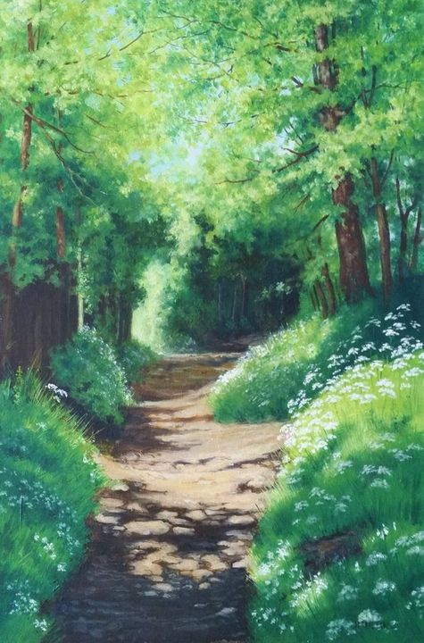
A Path in the Wirral£295 Ruined Building in Snow£250
Ruined Building in Snow£250 Green Landscape with Road£200
Green Landscape with Road£200 Five Birch Trees with Pool of Water£300
Five Birch Trees with Pool of Water£300 A View of the Hampshire Downs£300
A View of the Hampshire Downs£300 Landscape with Red Roofs£300
Landscape with Red Roofs£300 Thurstaston Beach at Sunset£200
Thurstaston Beach at Sunset£200 Autumn Woods£200
Autumn Woods£200 Winchester Cathedral£100
Winchester Cathedral£100 Five trees in autumn£250
Five trees in autumn£250 Tree in the snowPrice on request
Tree in the snowPrice on requestFigurative work 5
 My Beautiful Blue Hat£300
My Beautiful Blue Hat£300 Three Heads£100
Three Heads£100 Caught in the sun£250
Caught in the sun£250 1-5 Series of Ink and brush Heads£50
1-5 Series of Ink and brush Heads£50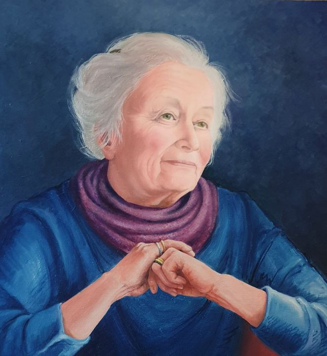
Portrait of a ladyPrice on requestBotanical work 10
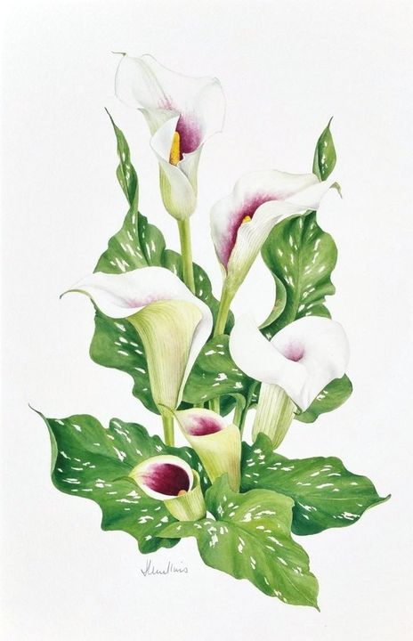
Zantedeschia£190 Pink Peonies£200
Pink Peonies£200 Brown Bearded Iris Study£195
Brown Bearded Iris Study£195 Pink Peonies£190
Pink Peonies£190 Pale Mauve Bearded Irises£200
Pale Mauve Bearded Irises£200 Autumn Fruits£95
Autumn Fruits£95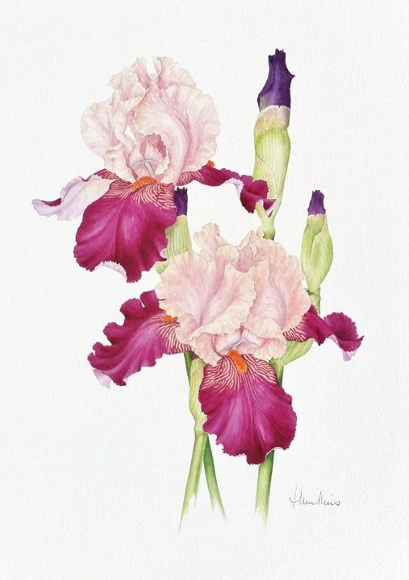
Two Magenta and Pink Bearded Irises£200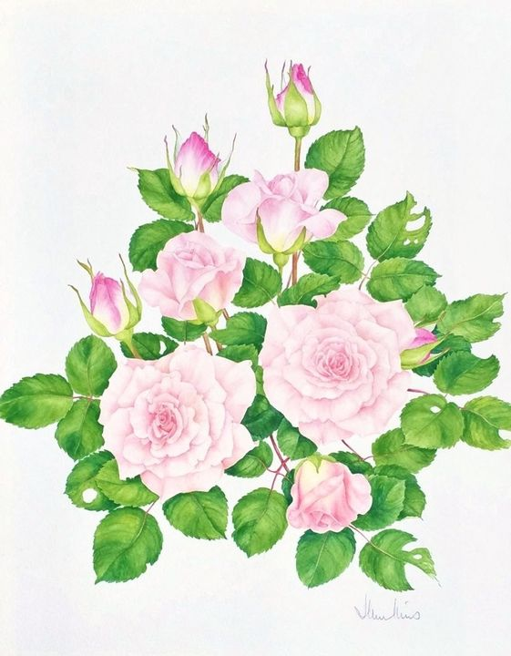
Summer roses£250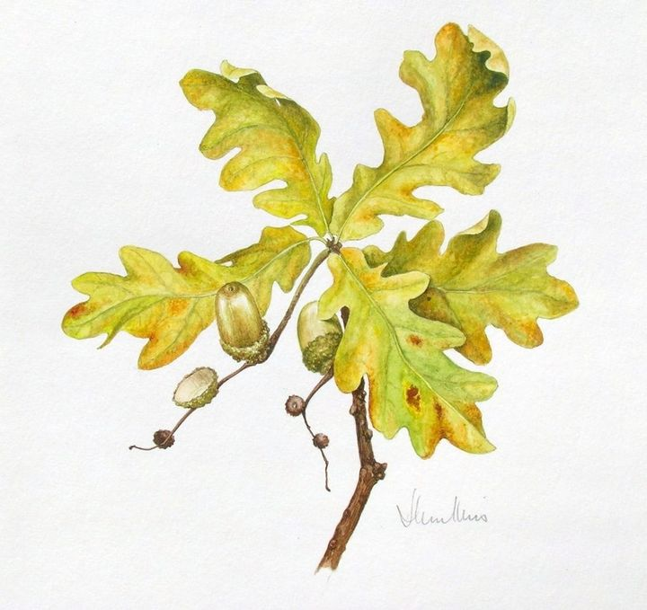
The two remaining acornsPrice on request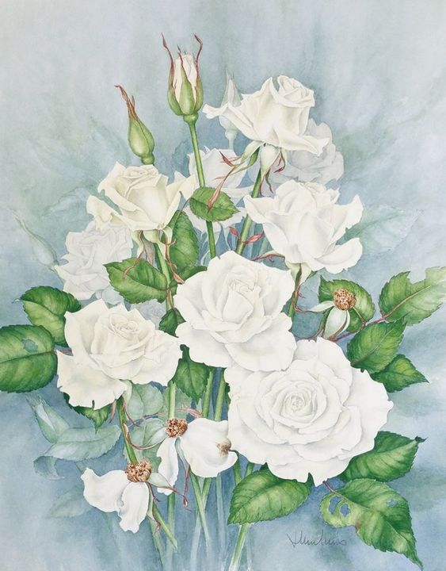
White roses against a blue background£200Watercolours of the imagination 23
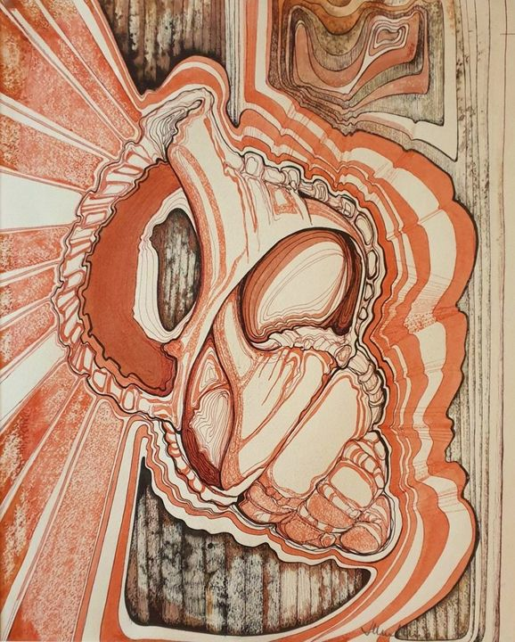
Design in Inks - Brown£100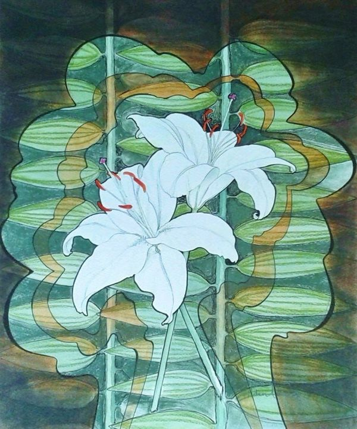
Design with White Lilies£120 Three Heads design in Ink£200
Three Heads design in Ink£200 Figure by waterfall£190
Figure by waterfall£190 The Pink Moon£300
The Pink Moon£300 Pink Fish and Shell£300
Pink Fish and Shell£300 Waiting£300
Waiting£300 The Chess Game£300
The Chess Game£300 Twisting Wave£300
Twisting Wave£300 Out of a Book£300
Out of a Book£300 Figure from the Sea£350
Figure from the Sea£350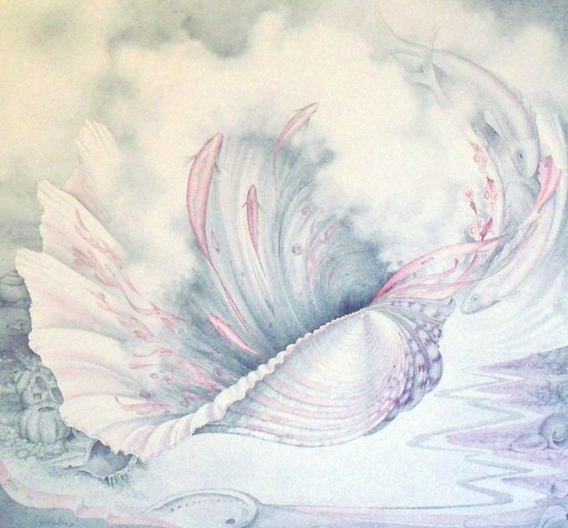
Floating Shell£390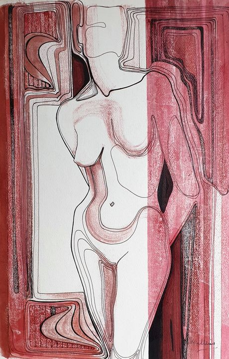
Sepia figure£125 Shells and Seaweed£150
Shells and Seaweed£150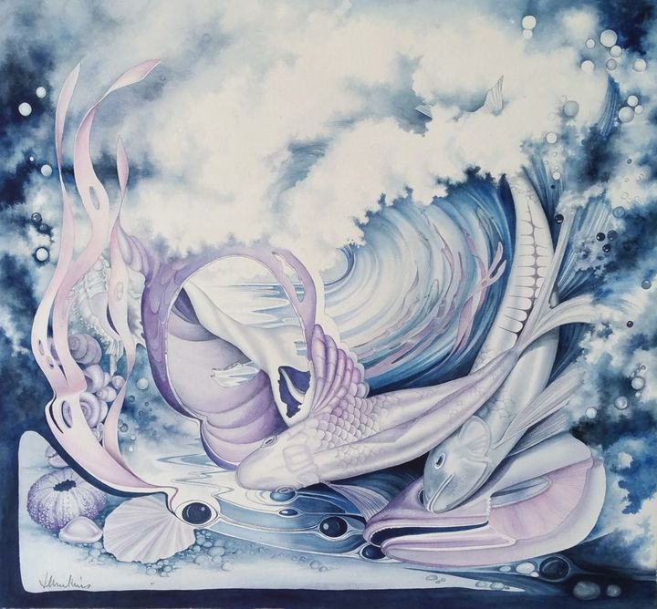
Tossed by the sea£600 The Garden£500
The Garden£500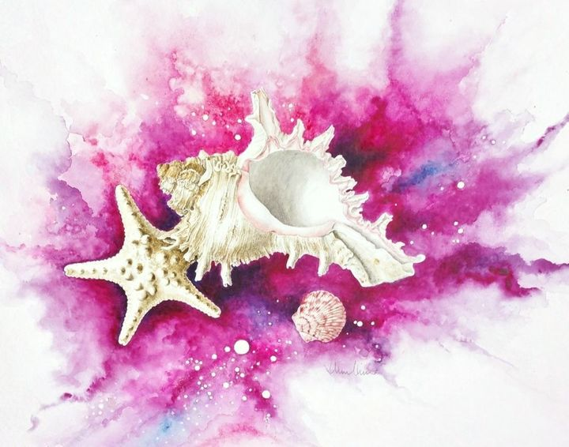
Shells with magenta wash£200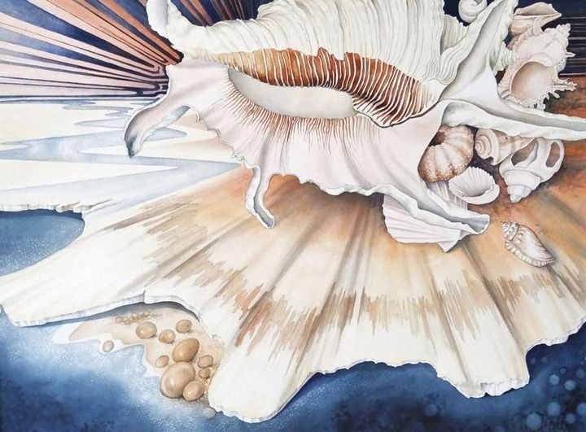
Shell study in brown and blue£200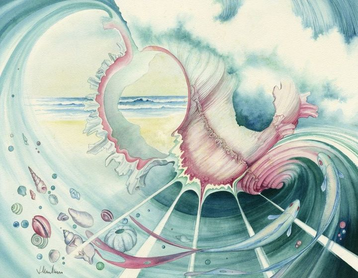
Looking through a shell£450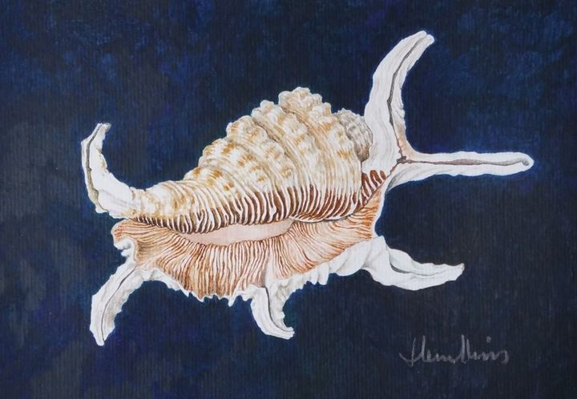
Shell study on dark background£95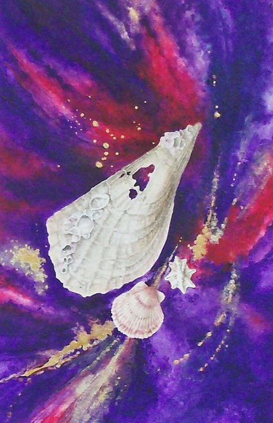
Shells on magenta and purple background£95 Shell design in black ink£100
Shell design in black ink£100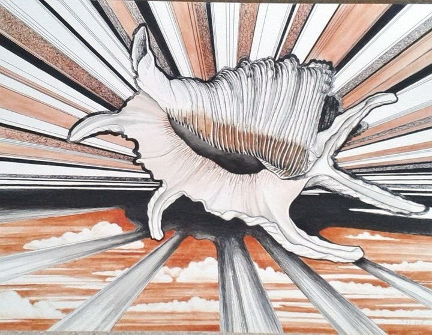
Shell in the cloudsPrice on requestStill life 5
 Still life with Cinque Port pottery£200
Still life with Cinque Port pottery£200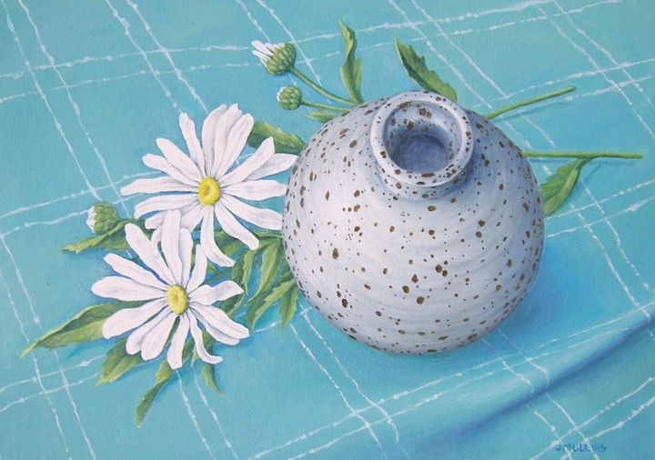
The Spotty Bowl£200 Blue Jug and Orange£200
Blue Jug and Orange£200 Stylised Still Life£300
Stylised Still Life£300 Pencil Study of ShellsPrice on request
Pencil Study of ShellsPrice on requestIllustrated poems 4
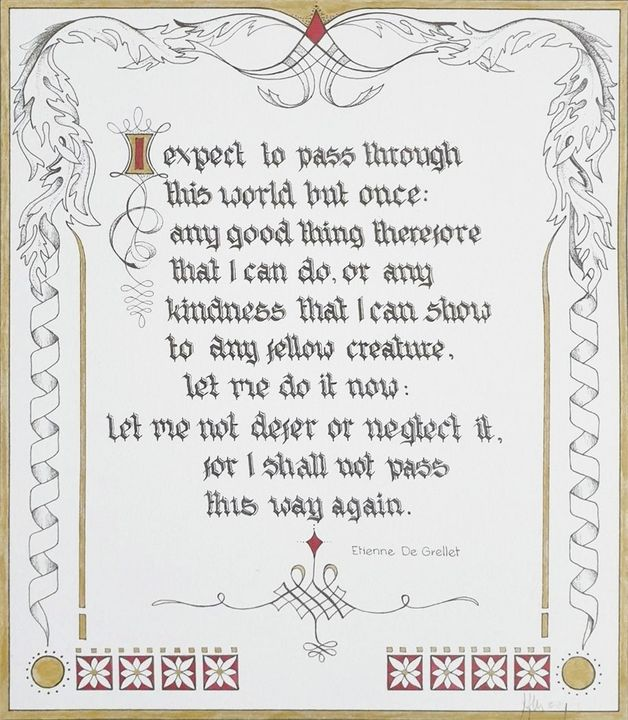
I expectPrice on request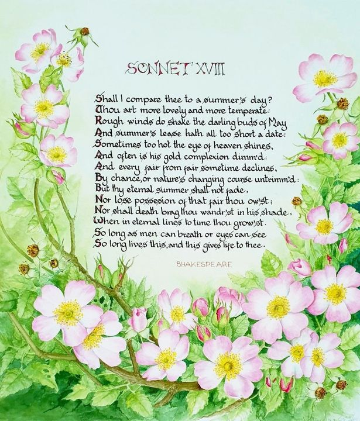
Sonnet 18Price on request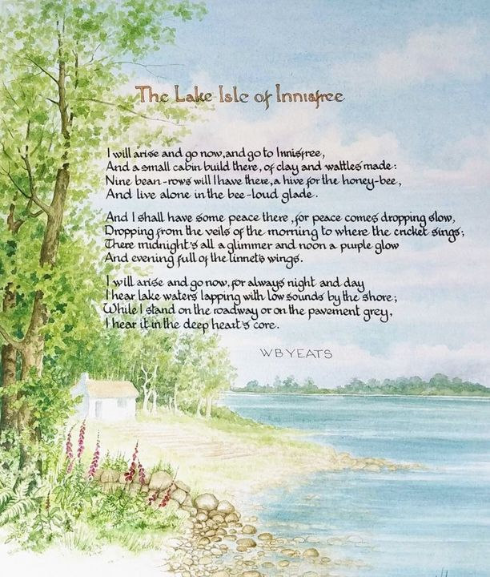
The Lake Isle of InnisfreePrice on request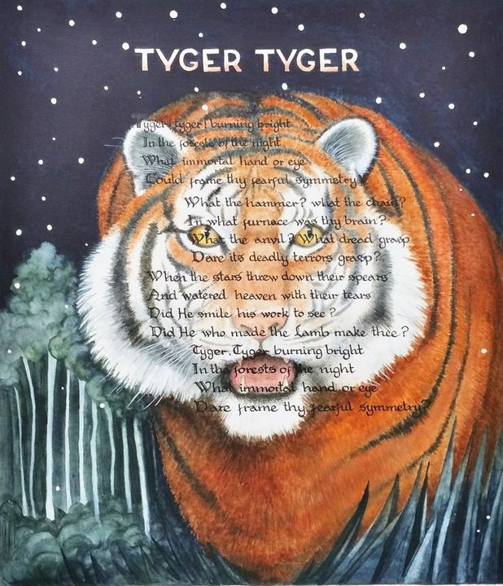
Tyger, TygerPrice on requestSea imaginings 13
 Shell Fantasy No.2£450
Shell Fantasy No.2£450 Shell Design in Brown and Pink£200
Shell Design in Brown and Pink£200 Moon, Sea and Shells£500
Moon, Sea and Shells£500 Composition with Argonaut Shell£600
Composition with Argonaut Shell£600 White Shell Skeleton£450
White Shell Skeleton£450 Floating Shell£660
Floating Shell£660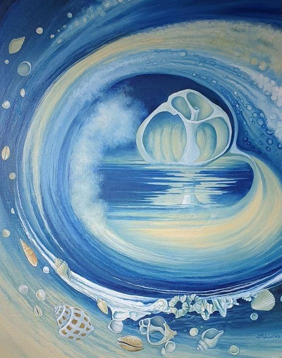
Shell Skeleton£500 Abalone shell on beach£700
Abalone shell on beach£700 Composition: two shells£680
Composition: two shells£680 Argonaut shell study£250
Argonaut shell study£250 Against the sea wall£650
Against the sea wall£650 Sea Urchins - Imaginative Composition£700
Sea Urchins - Imaginative Composition£700 Seascape£250
Seascape£250